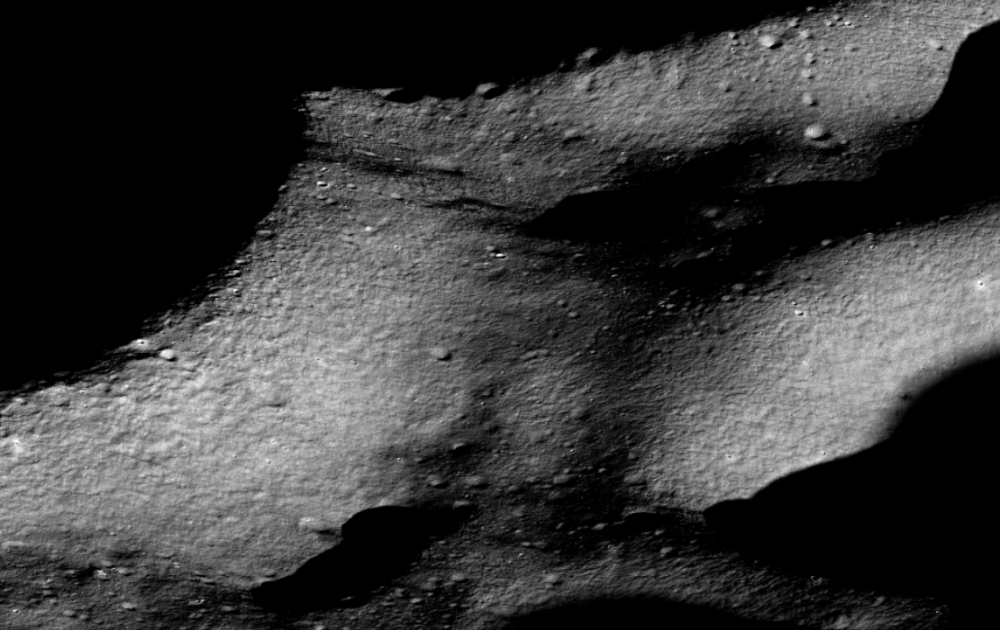

El caso ShackletonThe Shackleton case
En casi toda la Luna, la noche dura unas dos semanas, todos los meses. En el borde del cráter Shackleton, a menos de 10 km del polo sur, SeleneSight encontró un punto del tamaño de una plaza (40 m) donde la noche más larga de 18,6 años dura 2,8 días: 67 horas seguidas sin Sol. Es el peor caso posible, no lo que pasa cada mes.Across almost the whole Moon, night lasts about two weeks, every month. On the rim of Shackleton crater, less than 10 km from the south pole, SeleneSight found a spot the size of a town square (40 m) where the longest night in 18.6 years lasts 2.8 days: 67 hours in a row without Sun. That is the worst possible case, not what happens every month.

¿Pasa en cada ciclo lunar?Does it happen every lunar cycle?
No. De los 229 meses lunares que hay entre 2027 y 2045, en 67 no hay ni una hora de oscuridad y en 97 ninguna noche llega a un día. En conjunto, el Sol se ve el 85 % del tiempo. Las noches de dos o tres días aparecen en el “invierno” lunar: hay alguna en 73 meses, y noches de 66 o 67 horas se repiten en 11 años distintos. Pero nunca son más largas.No. Of the 229 lunar months between 2027 and 2045, 67 have not a single hour of darkness and in 97 no night reaches one day. Overall, the Sun is in view 85% of the time. Nights of two or three days appear in the lunar “winter”: there is one in 73 months, and nights of 66 or 67 hours come back in 11 different years. But they are never longer.
¿Por qué mirar 18,6 años?Why look at 18.6 years?
La Luna también tiene estaciones, aunque muy suaves: su eje está inclinado apenas 1,5°. En el polo, eso hace que el Sol suba y baje 1,5° a lo largo de un ciclo de unos 346 días. En el “verano” lunar el Sol pasa por encima de las montañas; en el “invierno” queda más bajo y el relieve lo tapa más tiempo. Por eso las noches largas caen siempre en invierno.The Moon has seasons too, though very mild ones: its axis is tilted only 1.5°. At the pole, that makes the Sun rise and sink by 1.5° over a cycle of about 346 days. In the lunar “summer” the Sun clears the mountains; in “winter” it sits lower and the terrain blocks it for longer. That is why long nights always fall in winter.
Además, la órbita de la Luna está inclinada unos 5° y ese plano gira despacio, como un trompo que cabecea mientras gira: tarda 18,6 años en dar la vuelta completa. Ese giro cambia cuánto sube y baja la Tierra en el cielo lunar (hasta unos 7°, clave para las antenas) y en qué momento del día lunar cae cada invierno. SeleneSight simula los 18,6 años hora por hora, 163.056 horas en total, para recorrer todas las combinaciones. Por eso los 2,8 días son el peor caso real, no un promedio.On top of that, the Moon’s orbit is tilted about 5°, and that plane turns slowly, like a spinning top that wobbles as it spins: it takes 18.6 years to go all the way round. This turn changes how high Earth rises and sinks in the lunar sky (up to about 7°, key for antennas) and at what point of the lunar day each winter falls. SeleneSight simulates the 18.6 years hour by hour, 163,056 hours in all, to go through every combination. That is why the 2.8 days are the real worst case, not an average.
¿Por qué importa para planificar?Why does it matter for planning?
- Sobrevivir o diseñarSurviving or designing
- Para aguantar una noche de dos semanas hacen falta muchísimas baterías o una fuente nuclear, pesadas y caras. Si el peor caso son 2,8 días, alcanzan paneles solares y baterías mucho más chicas.Getting through a two-week night takes a huge amount of batteries or a nuclear source, both heavy and expensive. If the worst case is 2.8 days, solar panels and much smaller batteries are enough.
- La fecha importaThe date matters
- La luz cambia de un mes a otro, así que un promedio no sirve. En ese mismo punto, el mes lunar que empieza a fines de marzo de 2028 tiene una noche de 67 horas, y el de octubre de 2028 no tiene ni una hora de sombra. En SeleneSight se mueve la línea de tiempo y se ve, mes a mes, cuándo hay ventanas con Sol y Tierra a la vista.Light changes from one month to the next, so an average is not enough. At that same point, the lunar month starting in late March 2028 has a 67-hour night, while the one in October 2028 has not a single hour of shadow. In SeleneSight you move the timeline and see, month by month, when there are windows with the Sun and Earth in view.
- Unos metros decidenA few metres decide
- En el hexágono de 2 km que contiene a ese punto, la noche más larga es de 13,1 días. Afinando a 40 m baja a 2,8. Por eso la precisión de la topografía lo es todo, y un punto tan pequeño es un recurso estratégico.In the 2 km hexagon that contains that point, the longest night is 13.1 days. Refining to 40 m brings it down to 2.8. That is why topographic precision is everything, and such a small spot is a strategic resource.